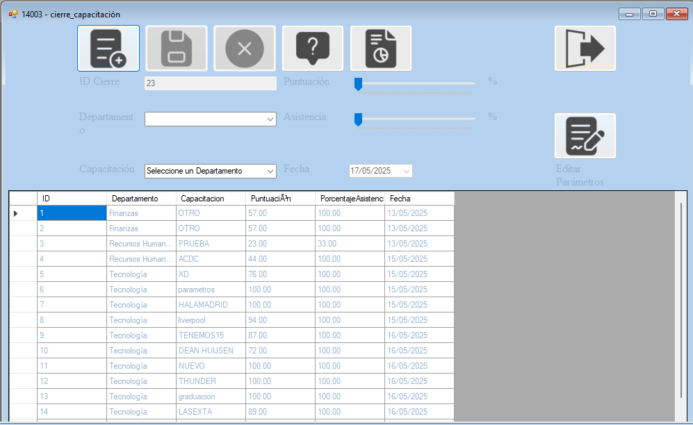
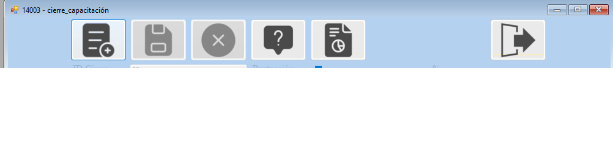
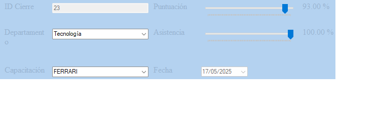
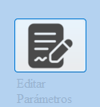
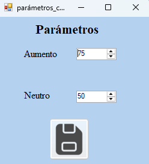
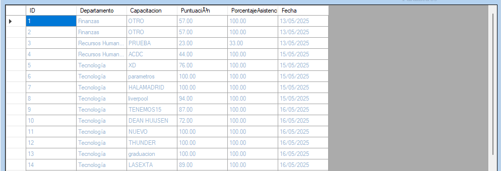

El formulario de Cierres tiene la función de cerrar las capacitaciones en base a las notas ingresadas de los empleados
en cada capacitación, esto permite que el sistema pueda calcular el nivel de competencia del empleado en base a la nota ingresada y la nota promedio del departamento al cual pertenece.

- Botones: Boton de ingresar, guardar, cancelar, ver reporte, ver ayuda y salir.

- ComboBox Departamento: Permite seleccionar cualquier departamento del cual se quiera hacer un cierre.
- Combobox Capacitacion: Una vez seleccionado un departamento se selecciona la capacitacion de la cual se necesite
cerrar y obtener resultados.
- Trackbar Puntaje: Muestra el promedio de notas de todos los empleados de ese departamento
obtenidos de la capacitación seleccionada
- Trackbar Asistencia: Muestra el promedio de asistencia de todos los empleados que asistieron a
dicha capacitacion
- Fecha: Muestra la fecha de hoy (fecha en la cual se genera el cierre).

- Editar parámetros: Es el boton que abre un formulario nuevo para editar los parametros que determinaran
si la puntuacion conseguida supone un aumento o disminucion del nivel de la competencia en el departamento .

- Formulario Parametros: En este formulario por medio de dos numeros el usuario autorizado podrá editar en la base de Datos
los parametros que considere que suponen un aumento o disminucion de nivel de las competencias de la empresa.

- Ver datos: En el DataGridView se podrán ver todos los cierres de los departamentos de la empresa
con sus respectivas capacitaciones. No se podrá editar ni eliminar ninguno de estos registros ya que son finales .
